28 Wrangling
“He did not arrive at this conclusion by the decent process of quiet, logical deduction, nor yet by the blinding flash of glorious intuition, but by the shoddy, untidy process halfway between the two by which one usually gets to know things.”
28.1 Data wrangling: what and why
Data wrangling covers all the work put into cleaning, organising, and restructuring data. Few datasets arrive perfectly formed in an ideal shape—other than datasets found in textbooks. They have to be checked (correcting or excluding cases) and reorganised (reformatting, transforming, and restructuring them). A detailed example is described in Amaliah et al. (2022). In-depth studies require a range of analyses, involving grouping, subsetting, and aggregating datasets.
Data wrangling takes time and effort. Every dataset with problems has different problems. Sometimes they are immediately obvious, sometimes they only become apparent during analysis. There are many, many ways of restructuring datasets. Some will be better than others. It will depend on the particular dataset and the reasons for analysing it.
28.2 Data cleaning and transforming
28.2.1 Errors, typos, outliers, missing values
Some errors are obvious (e.g., impossible values like diamonds with zero dimensions in §11.2), some become visible thanks to graphics displays (such as the diamond outliers observed in Figure 11.6), some emerge after analyses. The Olympics dataset in Chapter 6 had different names for the same event at different Olympic Games, as uncovered by Figure 6.4. The human spaceflight dataset in Chapter 10 recorded different times for people on the same mission and had a few other data issues that are discussed in §10.3. Amongst the chess players with FIDE ratings in 2015 there were 15 supposedly born in 1900. These errors were doubtless due to a 00 coding used somewhere in the original data submission. The corresponding ages were marked as NA, a standard code for a missing value.
Often errors can be corrected. Sometimes they can be discarded as definitely wrong. Ideally there are not many of them. Whether whole cases should be excluded if some data are in error or missing depends on how the data are used. For small datasets it can be important to have exactly the same cases in each plot; for larger datasets this is less critical.
Missing values may be recorded with different codings. The Annenberg survey data in Chapter 9 used “998” for “Don’t know” and “999” for “Refused”. In the movie dataset in Chapter 3, some missing values were recorded as “\N”.
28.2.2 Transforming and combining variables
Variable transformations can help to pick out individual data features. Standardising variables makes distributional comparisons across variables possible. Combining variables can reveal more complex structures.
Variables may be transformed onto alternative scales or combined with other variables to form new ones. The boxplot of movie runtimes, Figure 3.1, is scaled in weeks instead of minutes to help viewers make sense of the extreme values. Who remembers that 50,000 minutes is around 5 weeks?
Several transformations were used in Chapter 16 about football leagues. The main ones were needed to convert game scores into tables of results and league tables. The wrangling was complicated by a number of changes over time: three points for a win instead of two, using goal difference instead of goal average, changes in divisional structure, and, most recently, an incomplete season for two divisions due to Covid. Other transformations included a square root transformation used in Figure 16.7 to emphasise higher league positions over lower ones. In the wormcharts of team performances across seasons (Figures 16.8 to 16.10), cumulative team points were transformed by subtracting the league average at the time to make it easier to compare teams’ performances.
The mission times of individuals on spaceflights were initially plotted on a linear scale in Figure 10.4, shown again on the left of Figure 28.1. Plotting mission times on a log scale in Figure 10.6, repeated on the right of Figure 28.1, provided a better view. It also led to adding a more informative vertical scale.
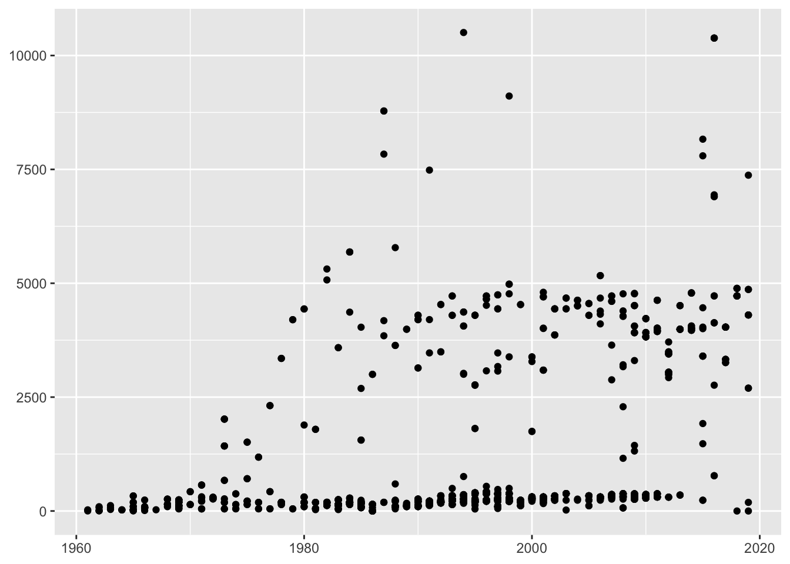
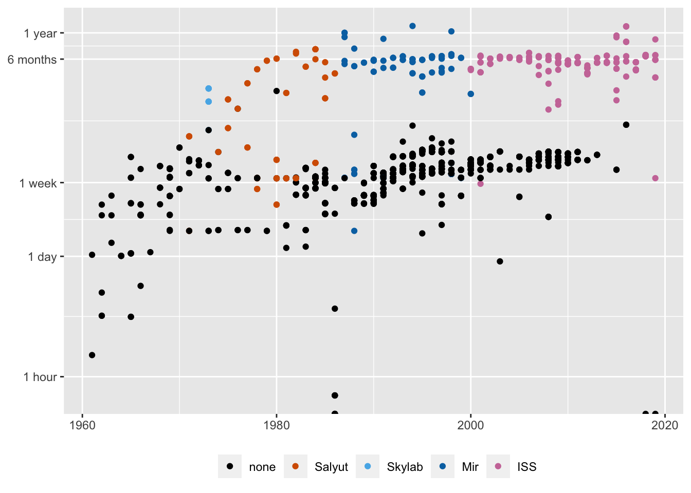
Figure 28.1: Individual spaceflight mission times over the years, plotted on a linear scale (left) and a logged scale (right)
Transformations can be used to standardise data to make distributions for different groups or variables more comparable. In §6.2 performance improvements in athletics events at the Olympic were compared over the years. Figure 6.7, repeated in Figure 28.2, shows the percentage changes for track and field events for men and women. Baselines were taken to be the average of gold medal performances at the Olympics from 1996 to 2016. For field events gold medal performances tended higher as winning distances became longer and winning heights became higher. For track events gold medal performances tended lower, as winning times got faster. An inverse transformation of the track events data could have been used to make their gold medal performances tend higher too.
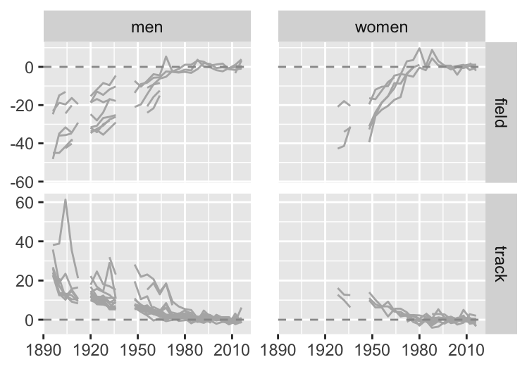
Figure 28.2: Percentage differences in gold medal performances in athletics events compared with averages over the last six Games
Variables in parallel coordinate plots almost always need to be standardised and there are several ways of doing it. Methods include putting variables individually onto [0,1] scales or normalising them by using the mean and standard deviation or by using robust statistics. There are examples in Chapter 14 for Darwin’s finches and in Chapter 18 for the Palmer penguins, where the transformations of the continuous variables are to [0,1] scales.
The decathlon provides an example where special transformations are used. The current scoring system, introduced in 1984, converts performances in the ten events to points using a different three-parameter formula for each event (IAAF (2001)). As equal points are intended to reflect equal performances, no further standardisation is needed in principle. Figure 31.9 shows how that can work in practice.
Categorical variables may be reported as numbers instead of text and it is worth making the effort to convert them to meaningful labels. Transforming the order of levels of a categorical variable from a default such as alphabetic is always sensible (and is discussed in Chapter 31). Occasionally numeric variables are assumed by software to be character variables, usually because the data file has a text error, and they have to be converted to numeric after fixing the text error. Software can often make good guesses about data characteristics, but you need to check.
Date and time information need special handling in software and almost certainly have to be transformed first. Newcomb’s estimates of the speed of light are displayed by experimental order in Figure 5.6 and by date in Figure 5.7. The differences are important for understanding the data. The two plots are shown again in Figure 28.3 below. The dates taken as text are from Newcomb’s paper (Newcomb (1891)) and were transformed to a special date format so that the R software could scale them appropriately.
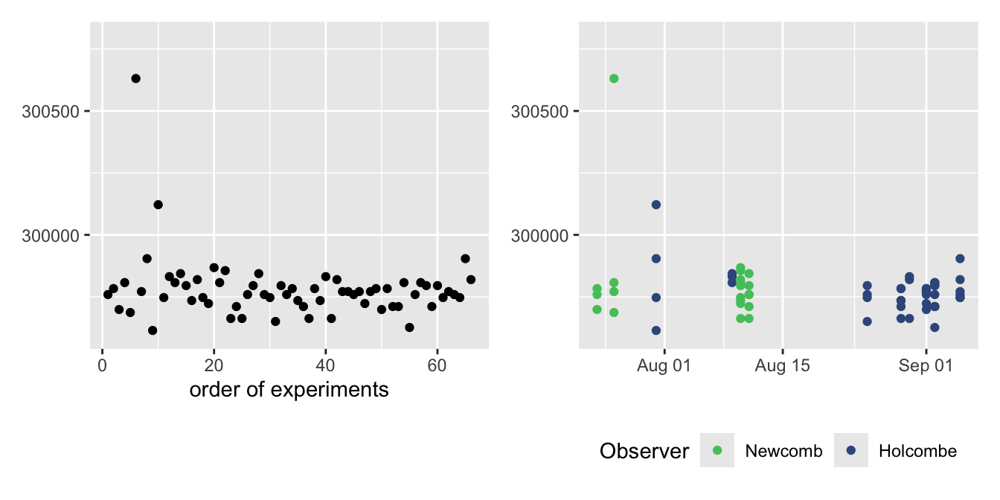
Figure 28.3: Newcomb’s estimates of the speed of light, plotted in order (left) and by date (right)
In Chapter 24 two datasets of half-hourly data over 10 years were analysed. Investigating patterns across days, months, and years required combining the textual date and time information and converting it into dates and times R could deal with.
Spatial datasets also require special treatment. They may be reported in any one of a large number of possible coordinate reference systems and it is essential in any study to convert all the spatial data to the same system. Much work has gone into transforming between these systems and the current state of play is summarised in Bivand (2020). One example here involved adding city locations to the maps of France in Figures 7.1 and 7.4. A further complication in Chapter 7 was converting a modern shape file of the departments of France to one matching the form in 1954. Finally cartograms may be used to take account of differences between areas as in Figures 7.5 and 9.7. The spatial transformations applied require complex iterative methods.
28.3 Restructuring: subsetting, grouping, aggregating
Some subsets are investigated more than others. It depends on the aims of the study. Subsetting involves selecting the relevant variables and cases. Large datasets can be heterogeneous with cases being of many distinct kinds that should be analysed separately. Subsetting overlaps with excluding errors, outliers or other problematic cases.
In studying how gold medal performances had changed over the years at the Olympics, only the subset of athletics and swimming events were considered. Weightlifting events could have been studied too, but many Olympic disciplines—e.g., gymnastics, boxing, diving—are not readily comparable over time.
Subsetting selects part of a dataset to be analysed. Grouping splits a dataset or subset into groups to be compared. In Chapter 12 results for two groups, those getting a treatment for their psoriasis and those receiving a placebo, were compared. In Chapter 14 species of Darwin’s finches were compared on one island, and one species was compared across different islands. In Chapter 18 three species of Penguins were compared. In Chapter 20 subsets of swimming performances were chosen and then compared by stroke, distance, and swimmer’s sex. In the Comrades Marathon dataset the numbers running were grouped by sex and age and compared over time in Figure 21.2, shown here in reduced size as Figure 28.4.
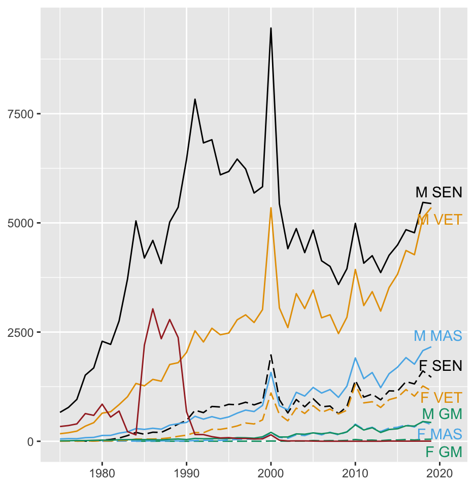
Figure 28.4: Numbers of finishers of the Comrades Ultramarathon by age group and sex from 1975 to 2019
Statistics are summaries based on aggregations. They depend on how data have been subset, grouped or aggregated. In the analysis of the 2021 German election in Chapter 26, results could be studied by individual constituency, by Bundesland, by groups of Bundesländer (such as the former East and West), or by the whole country. It is relatively easy to keep track of such hierarchical or nested structures. If there are several categorical variables with no hierarchical structure, as in the study of fuel efficiency of cars in the US in Chapter 17, there are many possible summarising levels. Just considering two of the classifying variables could lead to statistics for vehicle classes within manufacturer or for manufacturers within vehicle class or for vehicle classes and manufacturers.
Further flexibility arises when there are variables with many categories. Analyses may be simplified by combining smaller categories, as was done in Chapters 8, 15, 17, 25, and 26. Different analysts will have different opinions on how small small should be.
28.4 Naming, renaming and reclassifying
Datasets
Merging, subsetting, grouping, aggregating all create new versions of a dataset. Transforming variables and creating new ones do too. It is helpful to name and store these new datasets if they are going to be used more than once. This can lead to a large number of stored objects (Chapter 16 had over thirty), but provides structure for analyses—assuming supportive naming conventions are used.
Variables and categories
Variables may have abbreviated names when informative ones would be more helpful, for instance when software automatically uses names on plots and reports. Ideally, derived variables should be given names that reflect what they represent, so that it is easier to recognise what they measure. Software may classify numeric variables incorrectly if text is found amongst their values (perhaps notes or special codes like currency symbols). Exchanging data files between countries using decimal points and those using decimal commas also requires wrangling. It is common to have to reclassify variables as numeric after text has been replaced or removed.
Levels of categorical variables may be provided as numbers. It is better they be given meaningful names (which also ensures that the variables are not classified as numeric).
28.5 Wrangling for layered graphics
Wickham (2016) emphasised the advantages of thinking of data graphics as being built up of layers, one on top of the other, an idea that has been used in cartography for a long time. Sometimes the layers are all drawn using the same dataset, sometimes each layer is drawn with a different dataset. In the latter case, the datasets may be subsets, aggregations, or even models derived from one main dataset. Constructing them is part of data wrangling. A simple example plotting the distribution of bill lengths for the Adélie penguins shows the idea in Figure 28.5.
Code
library(palmerpenguins)
p2 <- penguins
p2a <- p2 %>% filter(species=="Adelie", !(is.na(bill_length_mm)))
names(p2a)[3] <- "bill length (mm)"
g1 <- ggplot() + xlab("")
g2 <- ggplot(p2a, aes(`bill length (mm)`)) + ylab("") + xlim(30,50)
g3 <- g2 + geom_histogram(aes(y=after_stat(density)), boundary=0, binwidth=1, fill="grey80") + ylim(0, 0.2)
g4 <- g3 + geom_density(colour="red", linewidth=1.25, adjust=1.5)
g5 <- g4 + geom_density(colour="blue", linewidth=1.25, adjust=0.5)
Adelg6 <- g5 + ggtitle("Adelie penguin bill lengths") + theme(plot.title=element_text(vjust=2))
(g1 + g2 + g3)/(g4 + g5 + Adelg6)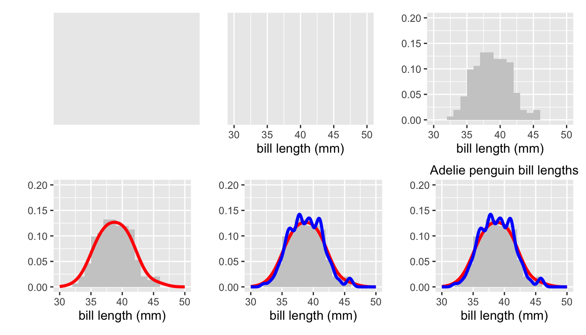
Figure 28.5: Layers building up to a histogram of the bill lengths of Adelie penguins with two superimposed density estimates.
The first layer top left is the background colour. The second adds a scale and x-axis label for the variable to be plotted. A histogram layer is added top right with the corresponding vertical axis scale (a density, not a count, so estimates can be overlaid). The first two plots of the lower row add a first and then a second density estimate. The final plot adds the plot title.
The advantages of a layered structure are that it is straightforward to add and remove layers to see what impact they have. It is clear where formatting options should be defined (such as binwidths for histograms or colours for points and lines). An additional advantage lies in being able to use different datasets in different layers. You might want to only use a subset in one layer, you might want to use data from a different year in another layer, you might want to use quite different, but related datasets. The only condition is that all fit in the scale limits of the plot. Layered structures offer flexible and explicit support.
Decoding graphics is easier when layers are clearly and separately defined. You can examine each in turn to study how it might be interpreted and what it contributes to the plot. It might emphasise information already present or add additional information. Reading code for plots made by others is simpler, as the code can be deciphered one layer at a time.
28.5.1 Types of layers
A plot’s layers are of different types and the order the layers are drawn makes a difference to how a plot looks. Generally, the background layers are drawn first, then the data and summarising layers, and finally the guide and text layers. Filled areas, for instance with a histogram or a boxplot, should be drawn before points and lines to avoid hiding them. Using transparency can help. The effects of drawing colours on top of one another, when objects in one layer are directly above objects in another, has to be checked.
In Figure 28.5 the two density estimates cover up the histogram details in the final plot (which suggests that they are a fairly good fit). Similarly, the second, rougher estimate covers up the first, although the differences can still be seen. A bigger version of the plot would be better, as in Figure 28.6. Now all the details can be seen. Graphics need to be large enough to display the information in them.
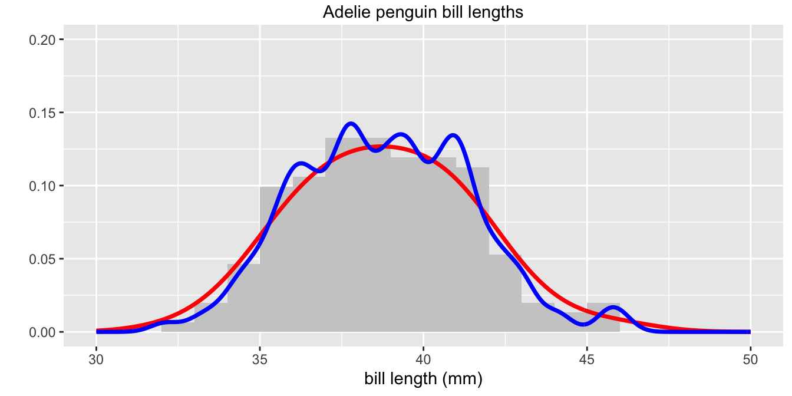
Figure 28.6: Histogram of the bill lengths of Adelie penguins with two superimposed density estimates
Background layers
The background colour of graphics in the past was usually white, as if they were drawn on a blank page. Nowadays background shadings of your own choice can be used or even a mixture by drawing layers on top of one another. Combinations of colours, transparency, and shapes can produce distinctive and unique patterns—if that is what is wanted. One muted background layer may suffice.
Axes, scales and gridlines frame the data. Axes and scales are almost always needed for data graphics (the main exception being network displays). When variables are specified, axes and their scales are drawn on top of any background colours and may include major and minor gridlines.
Data layers
Data layers are drawn on top of the background layers. They may use points or symbols, lines, bars or other area shapes. There are many variants and any software should offer a wide range. Amongst other options there are horizontal lines, vertical lines, lines connecting points directly, using a step or in a path. There can be multiple layers of data types. Figure 4.7 and many others use separate layers of points and lines for the same data.
There can also be multiple layers of data using different datasets. Figure 16.2, repeated here as Figure 28.7, uses data from three different leagues over three overlapping but different time ranges. The scale limits must be set in the first data layer to ensure that all data are shown.
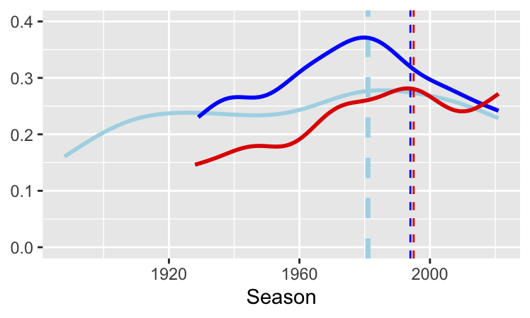
Figure 28.7: Rates of draws for the top tiers in Italy (dark blue) since 1934, England (light blue) since 1888, and Spain (red) since 1928
Summarising, modelling, and uncertainty layers
Data may be summarised using statistics or models. There could be several layers of such displays. On top of point data there might be a layer of group means and layers for linear fit and smoothed models. Data may be recorded as estimates with measures of variability. The corresponding uncertainty can be represented by error bars. Model uncertainty may be represented in a graphic by ribbons or bands around the model. Examples include chess ratings by age (Figure 8.21), age by year of mission of astronauts (Figure 10.2, redrawn here as Figure 28.8), and Titanic survival rates (Figure 25.12).
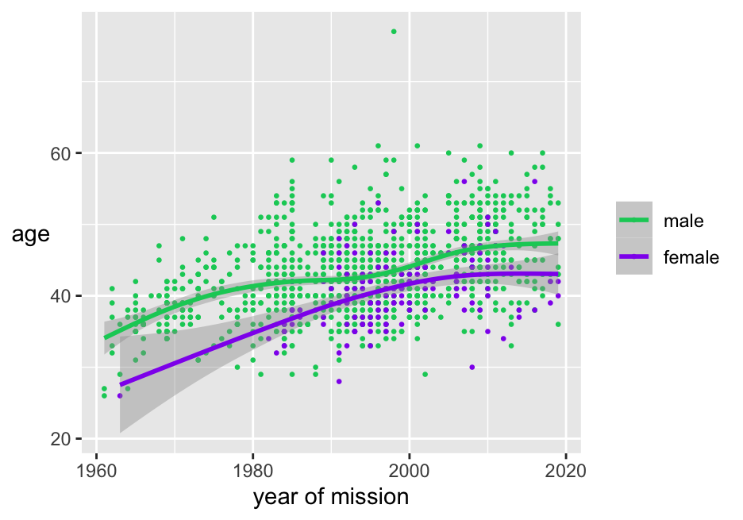
Figure 28.8: Scatterplot of age by year of space flight coloured by sex, with smooths and their confidence intervals
Data layers and summarising layers overlap to some extent. Histograms and boxplots summarise data, but are best thought of as data layers.
Guide and text layers
Guides can be added in additional layers: boundary lines, borders separating groups, plot areas coloured to differentiate them (Figure 4.7), arrows to point to particular features. Text layers can be drawn to add titles, legends, annotations, labels for points or lines.
Layering is effective for faceted data when the whole dataset is drawn in a muted colour in each facet first and each facet’s subset is drawn on top in colour, ghostplotting. Figure 10.7 is an example, redrawn here as Figure 28.9:
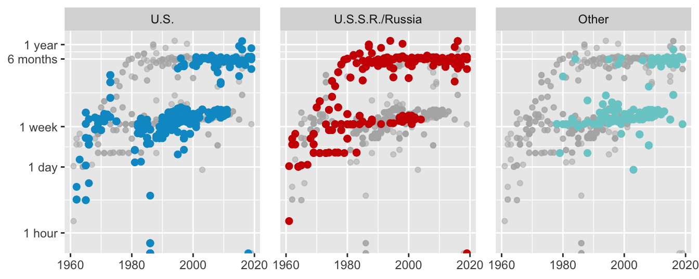
Figure 28.9: Logged spaceflight mission times of individuals by year of flight by nationality
28.5.2 The layers of a league wormchart
Figure 28.10 is a wormchart for the English League Championship of 1954-55, similar to the plots for other seasons in §16.6. There were 22 teams, each playing 42 games. There were just 2 points for a win and only two teams were relegated. Chelsea won with the low total of 54 points. At the half-way mark of 21 games, Chelsea were level on points with Cardiff City, who finished 20th. The bottom club, Sheffield Wednesday, had an appalling run in mid-season and would have finished much further adrift had they not surprisingly won three of their last four games.
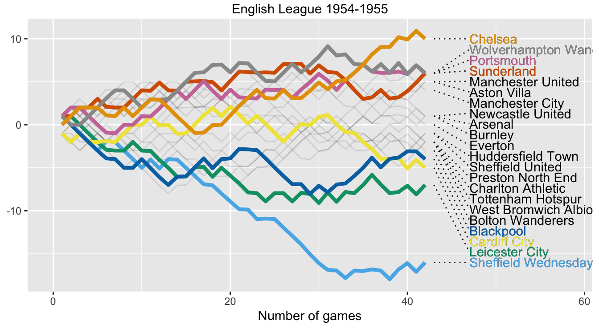
Figure 28.10: Wormchart for season 1954-55
Figure 28.10 has eight layers and uses four datasets. Figure 28.11 shows the build-up. There are background layers of colour and axes; a line layer of team performances drawn lightly (using a dataset of all teams); a layer of coloured, thicker lines for the top four and bottom four teams (using the subset of those eight teams); a text layer with the names of all teams (using a subset based on the last day of the season to get the order right); a segment layer connecting each team’s name to the end of its line with dots; a coloured text layer for the top four and bottom four teams (using the relevant subset of the previous dataset); a title layer.
Code
Seax <- 1954; divx <- 1; nsel <- 4
SeasonX <- Zall %>% filter(Season==Seax, division==divx)
SeasonX <- SeasonX %>% ungroup() %>% group_by(gameno) %>% mutate(meanP=mean(Cumpts))
nteams <- with(SeasonX, nlevels(factor(team)))
ngames <- max(SeasonX$gameno)
pal1 <- palette_pander(2*nsel)
ZY <- SeasonX %>% filter(gameno==ngames)
SelTeam <- ZY %>% filter(drank < (nsel+1) | drank > (nteams-nsel)) %>%
select(team, drank)
Sx <- SeasonX %>% filter(gameno < (ngames + 1))
Sy <- Sx %>% filter(team %in% SelTeam$team)
Sy <- within(Sy, Team <- reorder(team, -drank, last))
lS <- ZY %>% summarise(ul=ceiling(max(Cumpts-meanP)), ll=floor(min(Cumpts-meanP)))
ZY <- ZY %>% mutate(xx=gameno+2, yy=lS$ul-(drank-1)*(lS$ul-lS$ll)/(nteams-1))
ZYt <- ZY %>% filter(team %in% SelTeam$team)
g1 <- ggplot()
g2 <- ggplot(Sx, aes(gameno, (Cumpts-meanP))) + ylab(NULL) + xlab("Number of games") + xlim(0, ngames+16)
g3 <- g2 + geom_line(aes(group=team), alpha=0.1)
g4 <- g3 + geom_line(data=Sy, aes(group=Team, colour=Team), linewidth=1.5) +
scale_colour_manual(values=pal1) + theme(legend.position="none")
g5 <- g4 + geom_text(data=ZY, aes(xx+3, yy, label=team), size=2, hjust=0)
g6 <- g5 + geom_segment(data=ZY, aes(x=gameno+1, xend=gameno+5, y=Cumpts-meanP, yend=yy,
group=team), linetype=3)
g7 <- g6 + geom_text(data=ZYt, aes(xx+3, yy, label=team, colour=team), size=2, hjust=0)
g8 <- g7 + ggtitle(paste0("English League Championship ", SeasonX$Season,"-",SeasonX$Season +1)) + theme(plot.title = element_text(vjust = 2))
(g1+g2)/(g3+g4)/(g5+g6)/(g7+g8)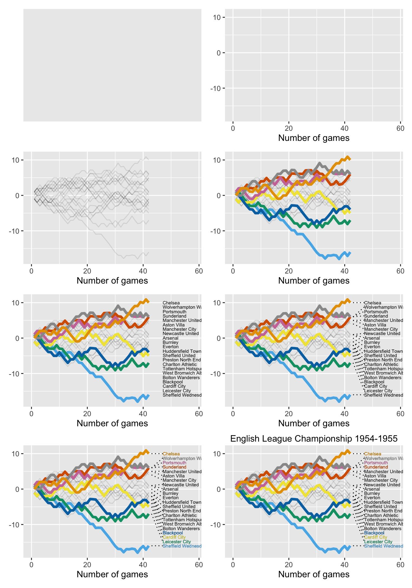
Figure 28.11: Layers building up to a wormchart for the 1954-55 English League Championship.
28.6 Putting datasets together and reproducibility
28.6.1 Reading in and merging datasets
Datasets come in different shapes, sizes, and formats. Modern software can usually read all of them, but some conversion may be necessary. Spreadsheets offer flexible structures with multiple sheets, and may include background information, annotations, and other non-standard structures. These need special treatment, as with the UN population dataset used in Chapter 8. Only the first and second sheets were required and the initial lines of the first had to be edited. Spreadsheets can be very useful for initial recording of data because of the notes and background information that can be included. Public organisations often distribute data in spreadsheet format. Journal authors sometimes make their data available in spreadsheets. There are disadvantages. Spreadsheets may include summary data along with case data. Additional text and multi-line headers may be employed. Different versions, subsets, aggregations of a dataset may be provided in individual sheets of a spreadsheet without being linked. In other words, if a data value were to be amended, it would have be be changed separately in each sheet in which it appeared (e.g., the spreadsheet used in Chapter 19).
If data are needed from more then one dataset, the datasets must usually be merged. Chapter 8 combined the chess ratings dataset with files for country populations, country codings, and regions. This increased the number of variables from 12 to 20, although many were unused and could have been dropped. The number of players included in this merged dataset dropped from 362502 to 191097, as only active players were considered. Finally the ratings data for two separate years were merged. The 2020 dataset had 362502 players and 12 variables, while the 2015 dataset had 227960 players and 12 variables. The merged dataset that included all players from both years had 364012 players.
In Chapter 4 the voting results file for the 1912 Democratic Primary was summarised by state and merged with files for the numbers of each state’s electoral votes in 1912 and 2020, and with a file for state populations in 2018. The unsummarised data file was also separately merged with a file of estimated times at which the ballots took place.
Mapped data reveal spatial patterns. Shape files for areas can be merged with data files. This was done in Chapters 7 (Bertin’s French workforce data), 9 (Gay Rights survey), 25 (Titanic), and 26 (German election 2021).
28.6.2 Reproducibility
For scientific publications it would be ideal to have authors provide code as well as data, both code for their data wrangling and for their analyses. Only base data would have to be made available, as other versions could be reconstructed with the code. This would improve the chances of being able to reproduce study results, providing a record of what had been done. Of course, that record would only be understandable to readers who could follow the coding language.
Reproducing published work is easier than it was, but is still not satisfactory, as various surveys in different fields have pointed out (e.g., Gabelica et al. (2022)). Two examples arose in this book. In Chapter 22 numerous tables of percentage success rates of facial recognition software were reported, but the raw data were not made available. Making the reasonable assumption that the underlying results must have been integers, it was possible to reconstruct much of the data from the percentages reported. In the supplementary material to the article on tests for malaria discussed in Chapter 19, there was a multi-sheet Excel spreadsheet giving the raw data and the data used in the article’s plots and tables. The sheets were not linked and formulae not reported. With a little work the connections could be reconstructed. With other datasets (that were not therefore not included in the book) insufficient information was provided or essential details were missing.
Main points
- Data cleaning is a continuing process through all of an investigation.
- Datasets may be subset, grouped or aggregated in many different ways, providing many different views.
- Layers of related data structures are a good way of building graphics.
- Wrangling is an essential support for graphical analysis.